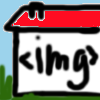

Playground

<head>Remember the head where the computer find how to display the page.</head>
<title>And the title of your page that you can find on the top of the browser window?</title>
<body>Body of the page.</body>
<img src="/folder/name-of-image.jpg alt="Some alternative text to be displayed if the image is not found or downloaded yet"> Here is an image tag but notice that this tag doesn't need to be closed with another one. 
<audio> For you to listen to some music or sound, we use the tag audio and if you choose it displays a little box like below. That way we can play, pause and see the progression of the listening. </audio>
<a href="somesite.com/somepagename">And this is how we make a link to another page. This one leads to the levels page.</a>